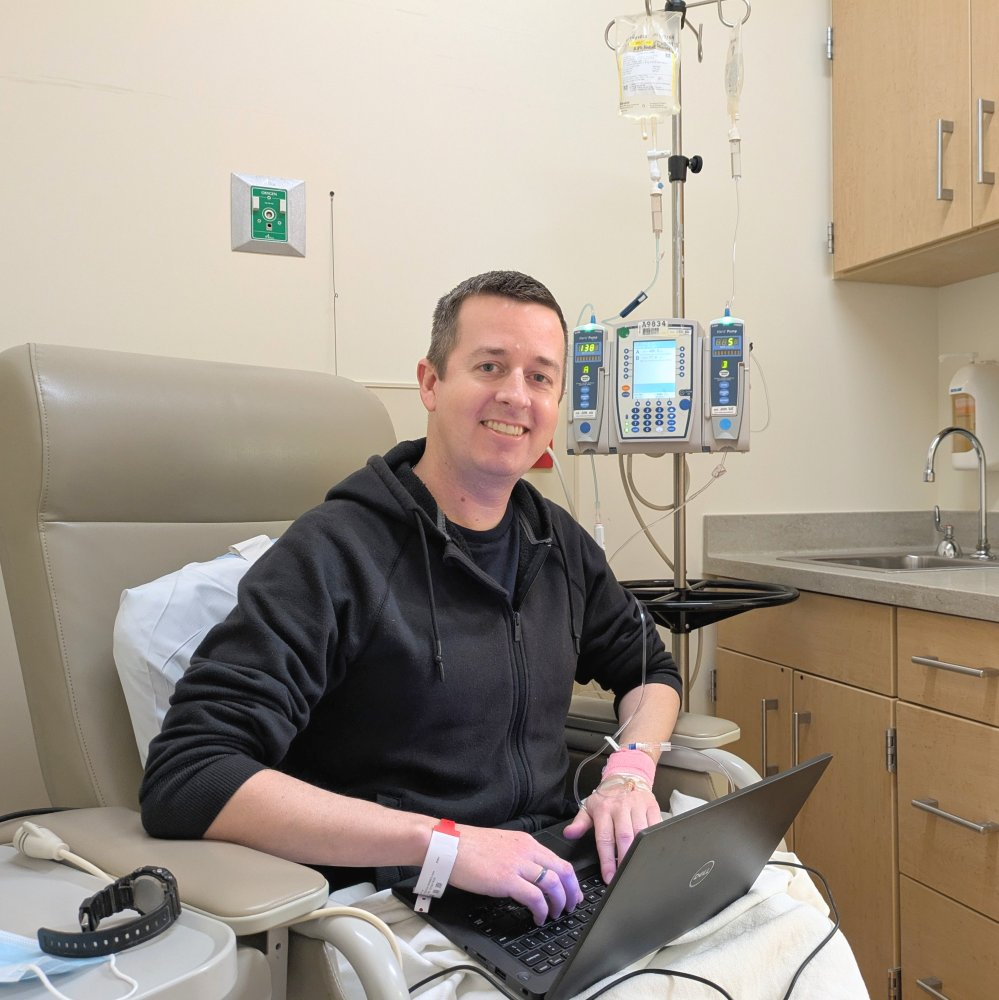
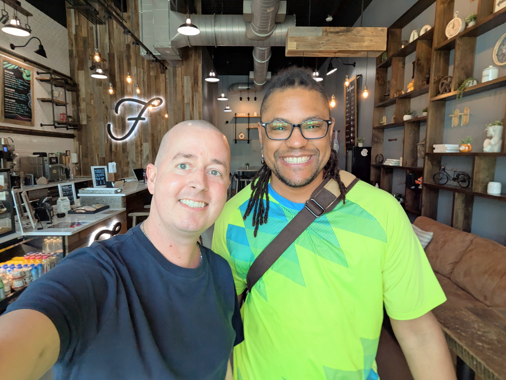
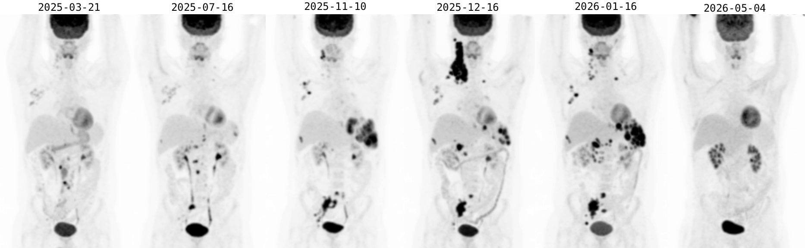
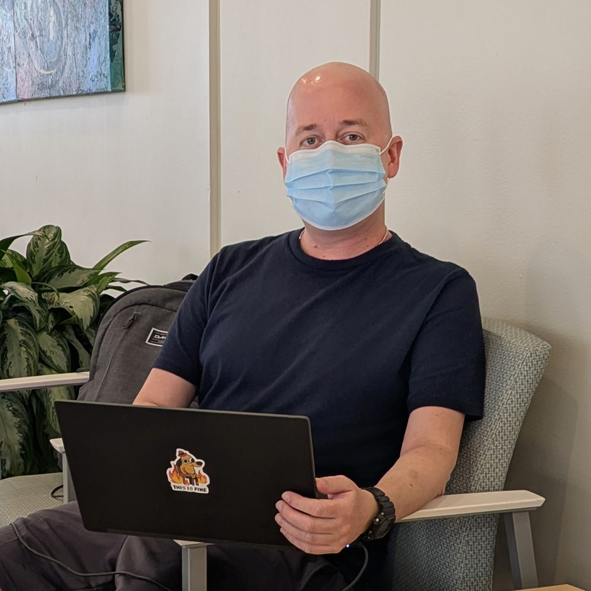

Scott W Harden - Status
Scott is currently undergoing an allogenic bone marrow transplant to treat relapsed peripheral T-cell lymphoma. Scott's bone marrow transplant progress is being tracked with daily blood tests:
Chart: In an allogeneic bone marrow transplant, chemotherapy destroys the existing bone marrow, which is then replaced by donor stem cells. White blood cell (WBC) count is a key metric for evaluating transplant progress. WBC count approaches zero after chemotherapy and recovers as donor stem cells engraft and produce new blood cells. Additional chemotherapy after transplant helps moderate the activity of the newly engrafted immune system, reducing the risk of graft vs host disease (GVHD).
Timeline
- 2026 Jun: Allogenic bone marrow transplant
- 2026 Jun: BMT Prep: fludarabine, melphalan, total body radiation
- 2026 May: PET CT indicates remission
- 2026 Apr: Chemotherapy: ifosfamide, carboplatin, etoposide
- 2026 Feb: Chemotherapy: duvelisib and romidepsin (aborted due to HLH reaction)
- 2025 Dec: Antibody therapy: anti-CD94 (aborted due to incomplete response)
- 2025 Nov: Relapse identified via CT and confirmed with surgery
- 2019: Treatments considered successful. Stable health for 6 years.
- 2019: Autologous bone marrow transplant
- 2019: Radiation therapy
- 2018: Chemotherapy: cyclophosphamide, doxorubicin, vincristine, and prednisone (CHOP, 5 rounds)
- 2018: Indolent disease became aggressive
- 2012: Diagnosed with Peripheral T-Cell Lymphoma
Photos
{kind=link}

Spending the day in the Clinical Research Unit
Dec 2025, Tampa, FL{kind=link}

Preparing for a long day of chemotherapy infusion
March 2025, Gainesville, FL{kind=link}

Losing my hair and Cushing's Syndrome makes me look different, but I'm feeling all right
April 2025, Tampa, FL{kind=link}

Pet CTs show disease progression over the last year, partial response to antibody therapy (Jan 16), and remission (May 4)
May 2025, Tampa, FL{kind=link}

Getting some computer time in between doctor appointments
May 2025, Gainesville, FLHow Can I Help?
- Donate blood: During this process I am unable to make enough blood and platelets to support myself, and I rely on transfusions from blood donors to keep me alive. I owe my life to anonymous blood donors, and if you donate blood and encourage others to do the same, it goes a long way toward helping people like me!
- Join the bone marrow registry: A healthy person with the right genetic match can donate some of their bone marrow to someone with blood cancer, allowing them to make healthy blood on their own, curing their disease! It can be hard to find a donor with a good genetic match, so the more people join the National Marrow Donor Program, the more people can be cured! Join the National Marrow Donor Program and you could save the life of someone like me!
Impact on Open Source Projects
- Scott is an avid open source contributor and maintainer of several projects in the field of data visualization and signal analysis. Scott reduced open-source work in 2025 and stopped it completely in early 2026 to focus entirely on health. Scott is excited to return as an active maintainer after his health recovers.
Miscellaneous
- Personal website: https://swharden.com
- GitHub: https://github.com/swharden
- 2019 medical blog: https://swharden.com/med/
- Contact: You are welcome to reach out to me directly, but as my energy drops it becomes harder to respond. Those around me will keep this page up to date if I become unable to update it myself.